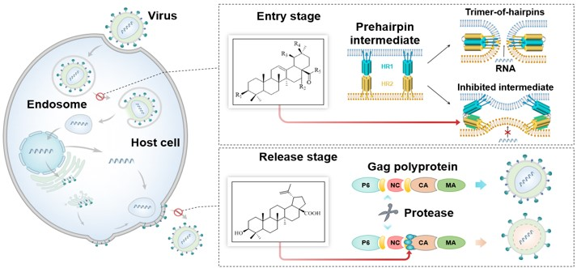
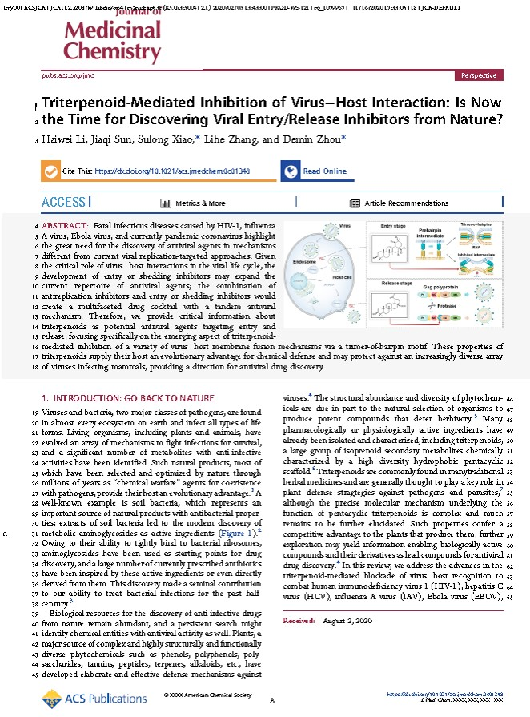

近期，我课题组应邀在药物化学领域权威刊物 J. Med. Chem. 上发表题为 “Triterpenoid-Mediated Manipulation of Virus-Host Recognition: Is the Time Ripe for Viral Inhibitors from Nature?”的展望（perspective），该综述于2020年11月17日在线发表，博士生李海伟为论文的第一作者，周德敏教授及肖苏龙副研究员为论文的共同通讯作者。
细菌和病毒是自然界中两类广泛存在的病原体，与之共同生存进化的物种为了抵抗这两类病原体的入侵而产生了一系列具有防御活性的代谢产物，例如70多年前发现的由土壤链霉菌等产生的氨基糖苷类抗生素。近年来，五环三萜类次级代谢产物的广谱抗病毒活性也逐渐被人们所发现。研究发现该类化合物可通过阻止病毒进入和释放两种机制实现对病毒与宿主细胞识别的调控作用。鉴于病毒进入和释放两个阶段在病毒生命周期中的重要性，探索针对该过程的病毒进入抑制剂及成熟抑制剂对于具有新作用机制的抗病毒药物的发现，特别应对目前爆发的新型疫情，具有非常重要的意义。
该综述首先介绍了具有抗 HIV、HCV、IAV 及 SARS-CoV 活性的五环三萜类小分子的发现及其构效关系的研究，包括已进入临床 Ⅱ 期的第一代 HIV 成熟抑制剂 bevirimat 和第二代可口服的 HIV 成熟抑制剂 BMS-955176（GSK-3532795）的发现。在此基础上结合本课题组多年的研究积累，介绍了综合运用多种现代分子生物学技术发现五环三萜抗病毒的作用靶蛋白及其氨基酸结合位点，阐述了五环三萜类小分子“通过阻碍 HR1-HR2 三聚体发夹状结构形成从而阻止病毒与细胞膜的融合”的广谱抗病毒进入作用机制，最后着重讨论了五环三萜类抗病毒进入及成熟抑制剂面临的挑战和瓶颈，为新型抗冠状病毒药物的设计提供了新的思路。


原文链接：https://dx.doi.org/10.1021/acs.jmedchem.0c01348
DOI号：10.1021/acs.jmedchem.0c01348